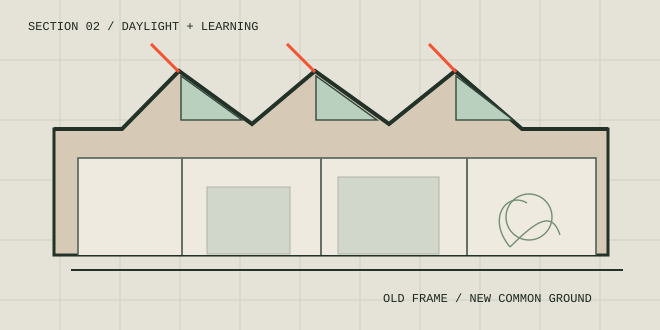

KEEP THE STRUCTURE
Existing bays establish an understandable architectural rhythm.
Learning spaces made from what remains.

A vacant industrial hall becomes the starting point for a small learning campus. The old structural bays provide an adaptable framework for spaces that change with their community.
The concept retains the original structural rhythm and inserts a sequence of small rooms, open workshops and shared places to gather. Not every corner needs a fixed use.
A sawtooth roof introduces diffuse daylight into the deep plan. New additions are visually legible, allowing the retained structure and contemporary learning environment to be read together.
Existing bays establish an understandable architectural rhythm.
North-facing rooflights bring even light to learning areas.
Adaptable spaces accommodate different activities over time.